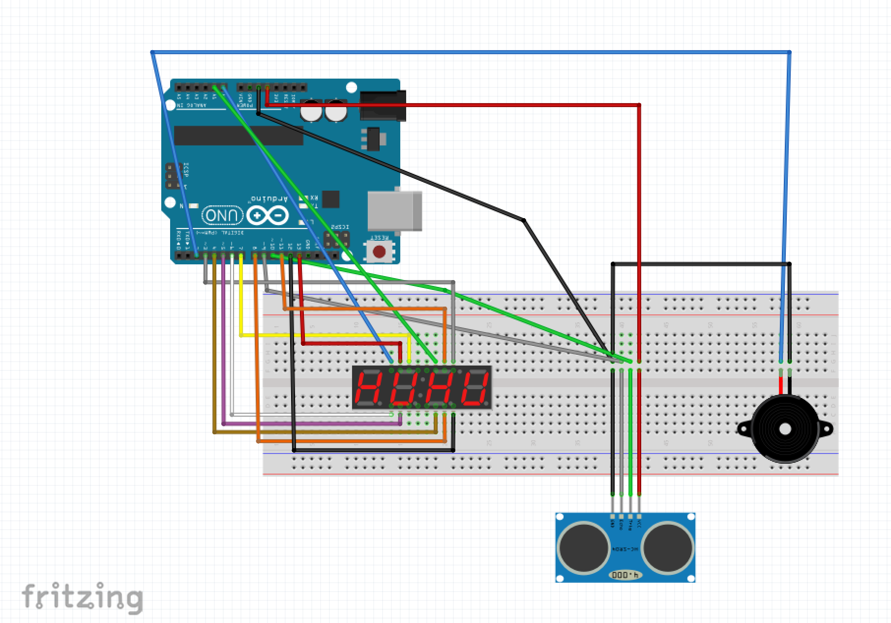
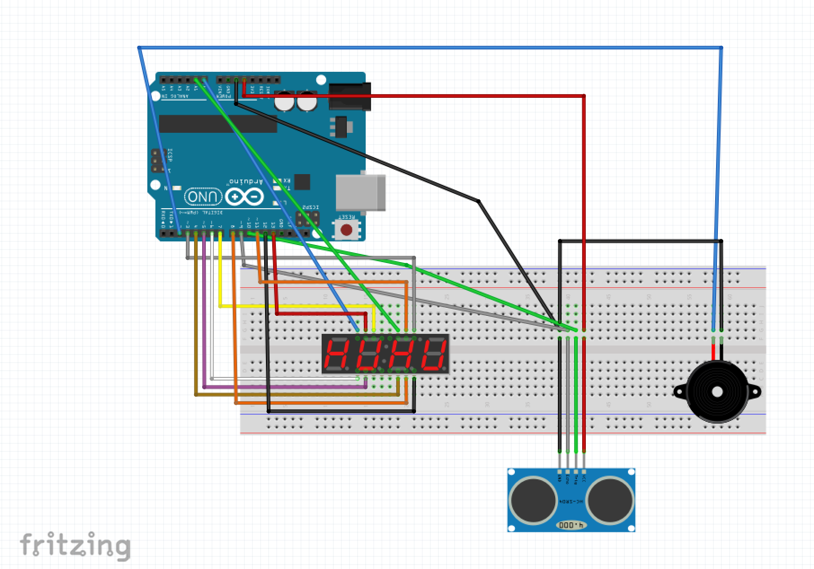

Day 1
The main objective for the first day was to detail out the concept with respect to its movements, mechanisms and the type of interactions that would take place. The team came together and created a mind map which further helped in deciding the types of challenges, interactions, and engaging elements that our game would have. After having decided the challenges and actions we decided the interaction points i.e. where the users will stand, what they will hold and throw and also where the target would be placed. The team also created a day wise plan for the entire duration of this project which helped us reach our goal. Towards the end of the day the concept was pitched in front of our classmates.
Day 2
On the second day the concept was further analysed and worked upon based on the feedback received from the pitch presentation that took place at the end of day1. Once the revised concept was finalised there was a MVP set which focused on the movement of the targets and the feedback once a goal is made. The features of the product were decided after making the MVP and there was a rough sketch made showing how the game would work. After working on the concept we moved onto the sensors and tech that would be needed to complete the prototype and a list of the same was made. At the end of the day the first level of prototype was created.
Day 3
After understanding the scope for the technology in our game, we experimented with sensors such as stepper motor and ultrasonic sensor for the movement and feedback respectively. For the purpose of rotating the game objects 180 degrees, a servo motor was used while 360 degree spinning of the object used a stepper motor. Codes to the Arduino UNO board were put for the operations of the motor. Further beeping sound was provided as a feedback for the player using the ultrasonic sensor. For the score display of each player, a 7-segment 4-digits display was used so that the score after each hit gets added.

Day 4
After working on the sensors, the team worked on the pulley mechanism of the game that will hold the suspended objects in place and move accordingly. To make sure that the suspended objects don’t clash while moving, they were hung at different depths. Various iterations were created for the form of the game objects. The final form was brought on Fusion 360 to understand the form in three dimensions.

 

Day 5
The finalised form was laser cut in the dimensions required for the game to be played with. A low fidelity prototype of the mechanism of pulley was made for understanding. The elements required for the pulley to work were created on fusion 360 and then 3d printed. The pulley was then assembled and tested by connecting it to aurdino. A system working diagram was created to understand the artefact, affordances, feedbacks in the overall game.


Day 6
On the sixth day, the form was assembled ready for the wiring to be fitted in. Buzzer feedback range was tested by attaching the ultrasonic sensors to the form. The aurdino connections and coding for display and addition of scores was worked upon. The stand for the wire connections to be fitted in as a support was cut and assembled. A second set of pulley parts were 3d printed.


The six day process inovolved many small steps which came together to form the final product. The curerent game is still in its prototype stage and we are working towards its development for the future.